This presentation's slide view does not support Internet Explorer, sorry. However, you can view all of the content—including notes on each slide—in "story mode" by disabling styles (press Alt, then on the "View" menu, select "Style" and then "No style").
or press Escape
Story mode allows you to read the presentation as a document, rather than a collection of separate slides, and includes extra background information on the content. It turns off keyboard shortcuts used for navigating between slides and is recommended if you're using a screen reader.
Slides mode displays each slide one at a time, as they would be projected for the audience. The extra information present in story mode is not displayed. Keyboard shortcuts or buttons can be used to move between slides.
Game Accessibility: Low Vision
Matthew Tylee Atkinson et al. @matatk on Twitter
My experiences playing games with a vision impairment (though I'll also be talking about general low-vision stuff).
HT Ian, Amy, …
Overview
Assistive tech
Design
Community
Assistive tech
This section is mainly talking about support for…
Traditional assistive tech
Later on we'll also cover…
Assistive features
Inclusive design
Assistive tech
Desktop
Console
Mobile
VR and AR
IMAGE TBD: Manual zoom (move head closer to object)
Assistive tech
Desktop
:-( *
Generally, native-app style games on desktop platforms can't benefit from assistive technologies such as screen magnifiers.
That being said, web-based games would potentially work with screen magnifiers and web browser zoom, but they may not be designed for it.
Assistive tech
Console
:-) *
There are assistive features such as pan-and-zoom (and invert colours) on consoles these days.
Games may not be designed with an awareness of them.
There are also features that enable you to get help when playing games, such as Xbox's co-pilot.
IMAGE TBD: Co-pilot
Assistive tech
Mobile
:-) *
There are assistive features such as pan-and-zoom (and invert colours) on consoles these days.
Games may not be designed with an awareness of them.
IMAGE TBD: Sorcery!
IMAGE TBD: Blackbar
IMAGE TBD: Puzzles
However, you can miss important stuff when zoomed in.
IMAGE TBD: Machinarium examples
One more thing…
You can use some mobile devices, such as the iPad as an assistive technology…
As with apps, games can benefit from the larger screen size.
You can also enlarge games designed for the iPhone on the iPad.
IMAGE TBD: Large screen of tablet vs phone
IMAGE TBD: x2 button for iPhone apps
Mobile devices might also be used as assistive technology: e.g. to play a digital version of a boardgame that might be hard to play IRL.
IMAGE TBD: Digital board game
Assistive tech
VR and AR
IMAGE TBD: SeeingVR - AT within VR
IMAGE TBD: SeeingVR - VR enhanced for accessibility
Design
Design
Text size
Colour
Detail
Style
Reactions
Orientation
Design
Text size
Text size is the
#1
complaint about game accessibility.
Design
Colour
Some games have options to assist users who struggle to see colours. For example, Frozen Bubble offers an option to include shapes as well as colours.
However, it is better when the game is designed to not need such an option.
IMAGE TBD: (video could be used but an image would suffice)
Design
Detail
The level of detail in games has increased over time. This can make it harder to see what's going on.
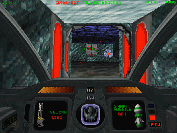
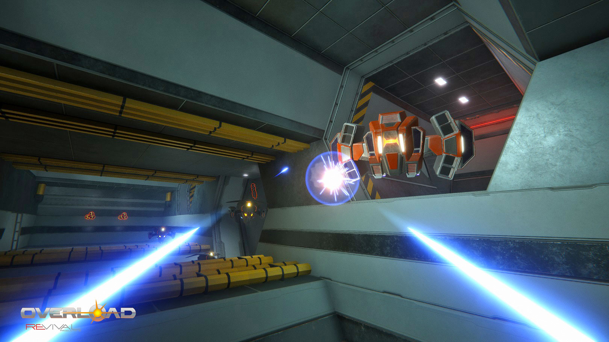
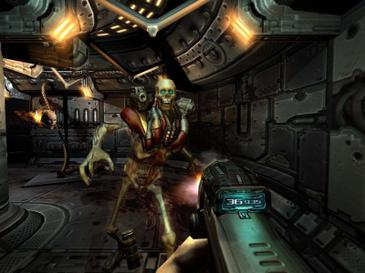
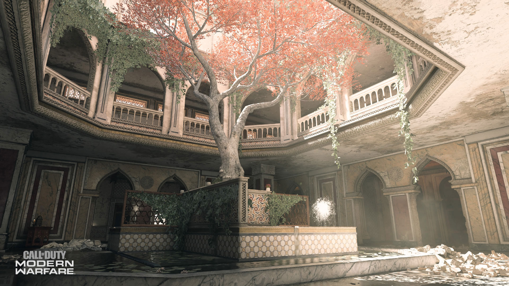
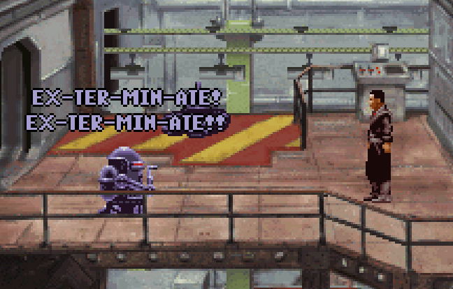
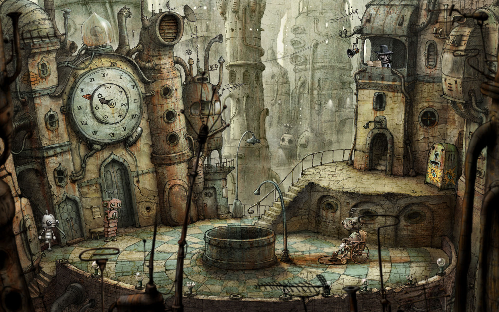
IMAGE TBD: Racing game example
Design
Style
Sometimes the aesthetics of a game actually make it more accessible. Two popular styles at the moment are really enticing for me: retro-style pixel art and synthwave. These involve low-res graphics and/or bright colours, which are ace for me :-).
IMAGE TBD: Mirror's Edge (3D, 2D)
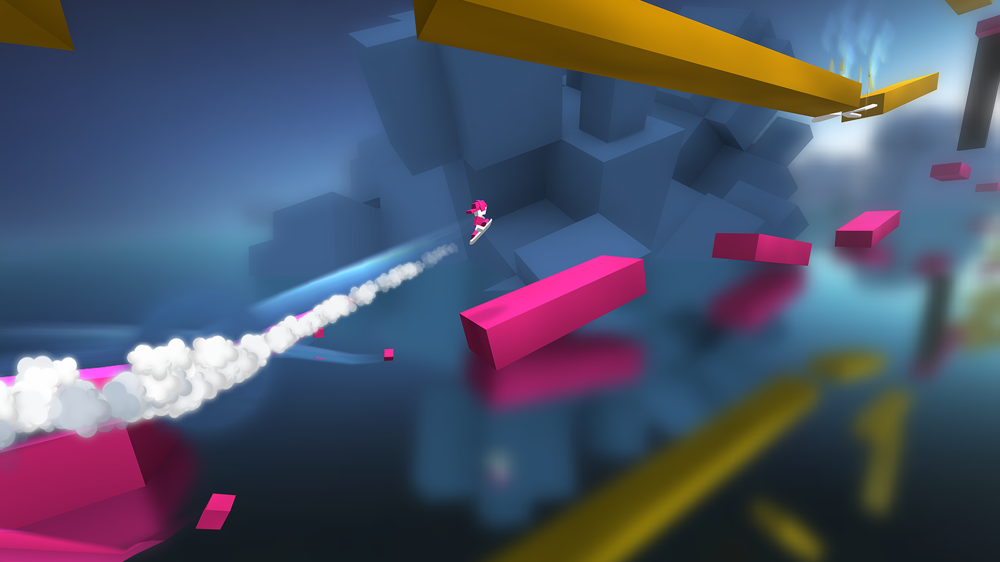
IMAGE TBD: Minecraft
Audiogames
IMAGE TBD: Papa Sangre
IMAGE TBD: Accessibility-specific
Design
Reactions
IMAGE TBD: Rally games (call back to the issues around detail in racing games, earlier)
IMAGE TBD: Co-pilot (in the helper sense) e.g. Knights and Bikes
IMAGE TBD: Button-mashing
Design
Orientation
IMAGE TBD: Maps
IMAGE TBD: Waypoints
Community
Community
Communication
Online play
Modding
Mapping
Community
Communication
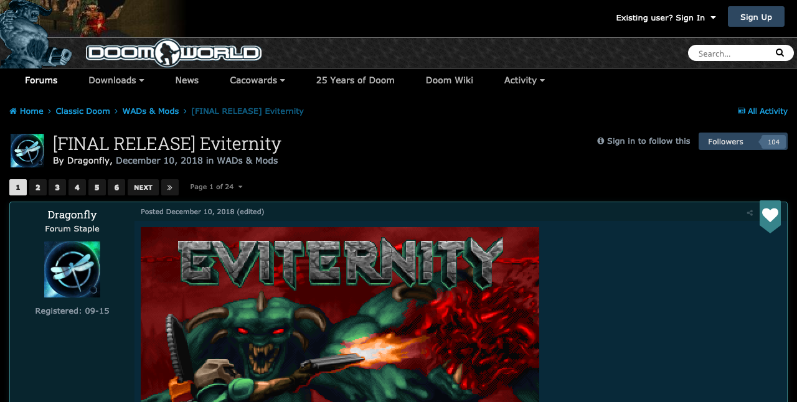
IMAGE TBD: Keeping up with the chat can be hard
Community
Online play
IMAGE TBD: Reactions (again, as depends on others). DM example?
IMAGE TBD: Keeping up with chat whilst also playing the game
IMAGE TBD: Playing with bots
IMAGE TBD: co-op
Community
Modding
IMAGE TBD: Visual example of a total conversion, before/after
For making modifications, you might use a code editor. It could be one that comes with the game, thus requiring that accessibility was considered in the development of its UI, or it could be any stadnard editor.
Community
Mapping
IMAGE TBD: 2D tile-laying
IMAGE TBD: 3D CAD—UnrealEd?
IMAGE TBD: LDL
Press ? for help; I for info on story mode
The slideshow is in slides mode. Arrow keys will move between slides. To use story mode, which includes extra background information on the content, and lets you browse using a screen reader's virtual cursor, press S, or use the Tab key to reach the story mode button.
Slide locked—press Escape to unlock
For more info…
The real content of a talk is often not in the slides, but in what's said around them. Story mode shows you not only what was projected, but the explanation behind it too.
The presentation is currently in slides mode.
To access story mode, use the menu.
If you'd rather stay in slides mode…
Navigation in slides mode
Tap in the left part of the screen to go back, or the right part of the screen to go forward.
Keyboard
Press S to switch to story mode, ? for help on keyboard shortcuts and navigation, or Escape to close this.
Story Slides Help
Tap either the left or right third of the screen to move to the previous or next slide. If you have a keyboard attached, you can use the following shortcuts.
Key(s)
Action
S
Switch to story mode
L
Lock a slide: disable all navigation keys, so if you're using a screen-reader in slides mode, you can explore the current slide with your virtual cursor.
F
Toggle full-screen slide view (not supported on iPhone)
→↓Page Down
Next slide
←↑Page Up
Previous slide
Escape
In story mode: go to slides mode
In slides mode: disable the current slide lock; no effect otherwise


 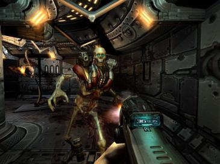
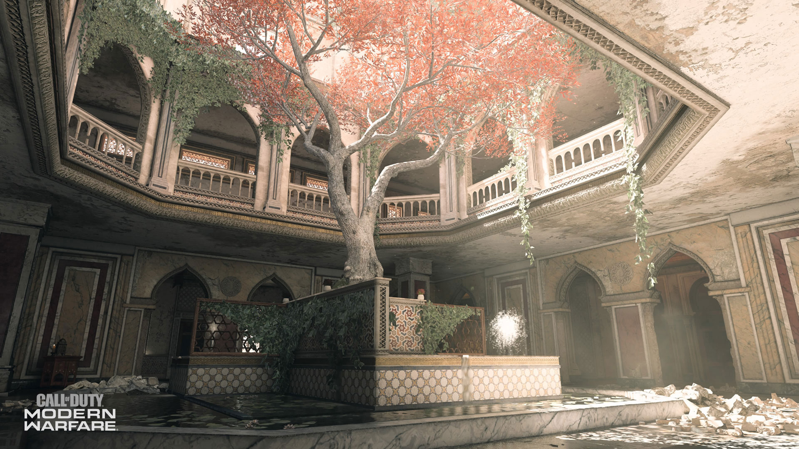
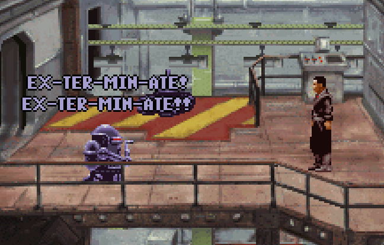
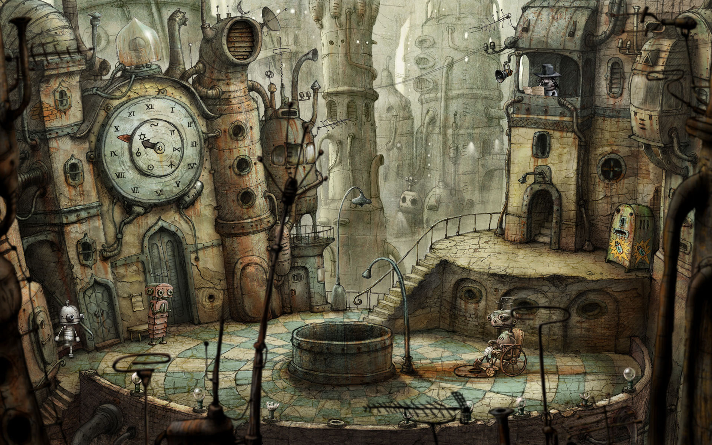
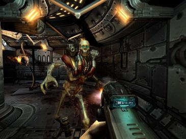
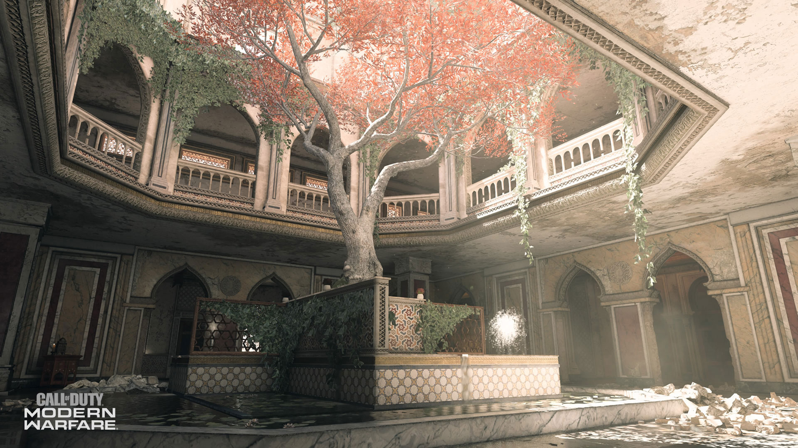
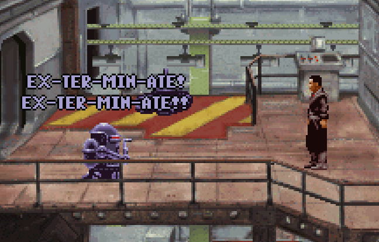
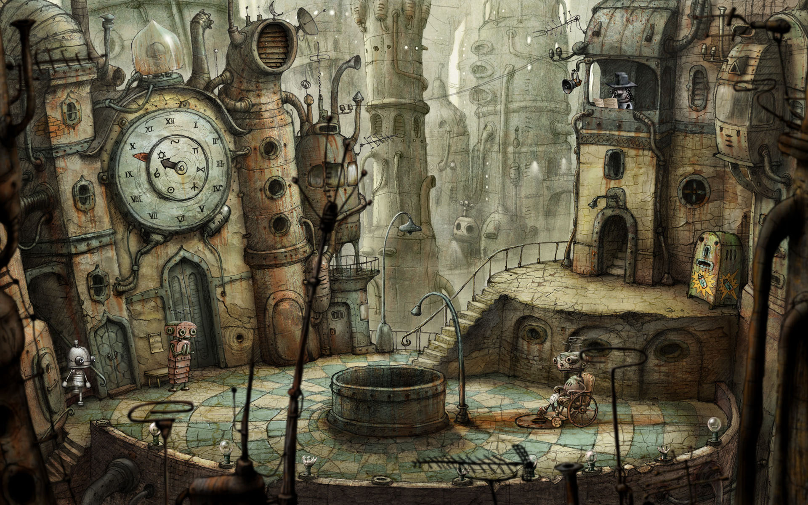